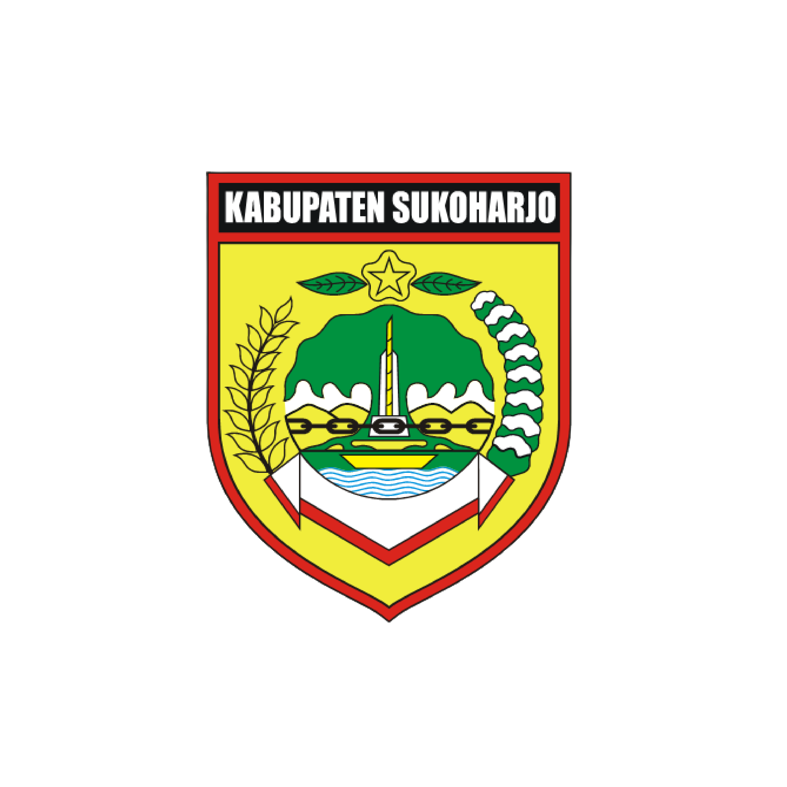

DINAS LINGKUNGAN HIDUP
KABUPATEN SUKOHARJO
Sistem Laporan Permohonan Bantuan
LAPORAN PERMOHONAN BANTUAN
TANGGAL
NAMA PEMOHON/INSTANSI
KETERANGAN PERMOHONAN
NOMOR SURAT
ALAMAT
STATUS REALISASI
Pilih status realisasi
SUDAH DIREALISASI
BELUM DIREALISASI
TINDAK LANJUT
KIRIM PERMOHONAN
TOTAL PERMOHONAN
0
SUDAH DIREALISASI
0
BELUM/TL
0
TIPS PENGELOLAAN SAMPAH
Pisahkan sampah organik dan anorganik sejak dari sumbernya
Gunakan kembali (reuse) barang yang masih layak pakai
KONTAK KAMI
Jl. Jend. Sudirman No.198, Sukoharjo, Jawa Tengah